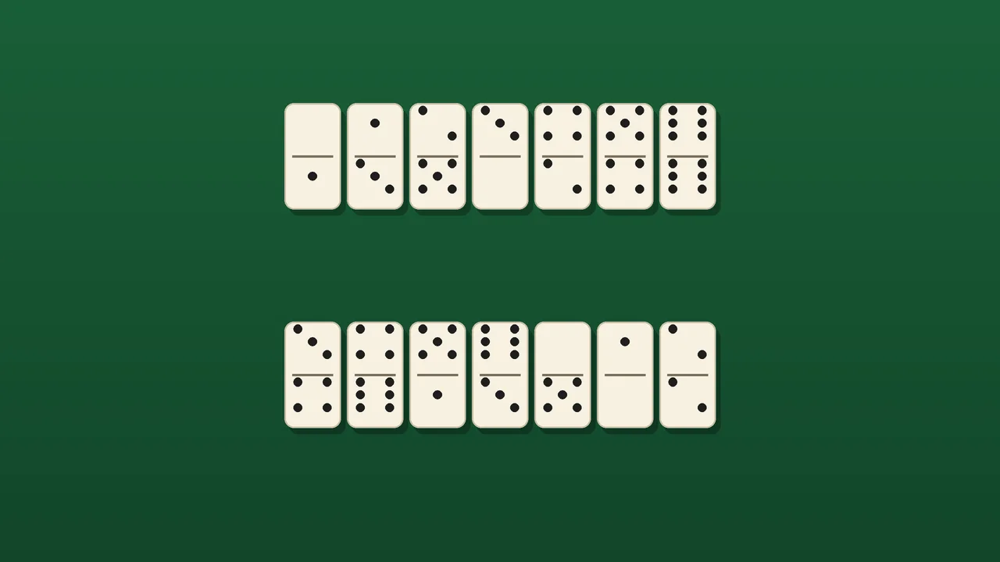
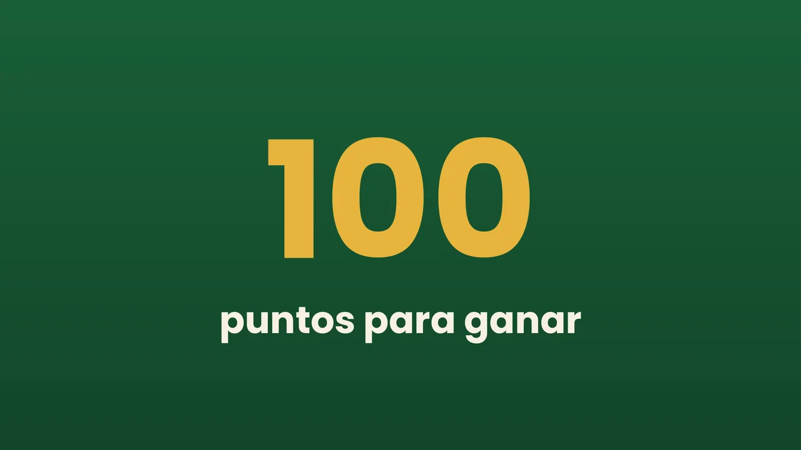
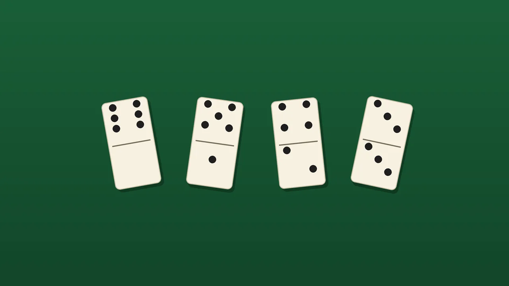

Reglas
Lo básico para jugar el torneo.

Fichas y mesas
Se usa el juego doble seis, que tiene 28 fichas. Cada jugador toma 7 fichas y las esconde de los demás. Sale el jugador que tenga el doble seis.
Puntos
Al terminar cada mano, la pareja ganadora suma los puntos de las fichas que le quedaron a los rivales. La primera pareja en llegar a 100 puntos gana la partida.


Juego limpio
No se permite mostrar las fichas ni hacer señas a la pareja. Se juega con respeto y cualquier duda se le consulta al árbitro de la mesa.